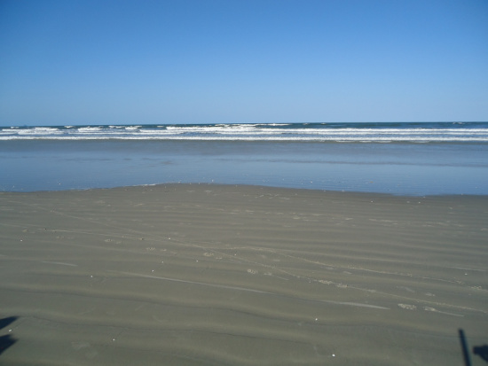

My name is Gabriel G. de Brito and I'm a computer science student at computing department of the Federal University of Paraná. I'm mostly interessed in functional and low-level programming. Also, I have some experience with a lot of programming languages. My favorites are Lua, C, Rust and Lisp. Currently, I'm learning OCaml.
When I'm not studying computing, I like cars, photography and hiking! Here you can see a photo I took from a beach where I went camping.
